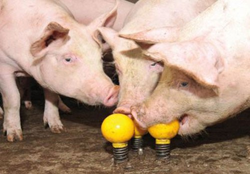

Publicado em 25 de julho de 2018 por Laura Ferreira e Mariana Fantini
O hábito de colecionar animais vem desde os imperadores chineses, astecas, faraós egípcios e chefes de estado e se perpetuou pelas famílias nobres ao longo do tempo. Surgiram posteriormente a criação dos zoológicos onde os pioneiros foram os europeus. Passou então de coleção para cativeiros onde os animais ficavam exclusivamente em jaulas visando sua manutenção e reprodução causando um grande estresse, mas hoje em dia tem um caráter bem mais de enriquecimento ambiental, manutenção da espécie e de pesquisa.
Ao longo do tempo essa realidade se modificou e os zoológicos atuais tem a função de conservação ex-situ (conservação de animais silvestres fora do seu habitat natural), reprodução, pesquisa e educação ambiental. Seu papel é preponderante na parte de conservação uma vez que abriga diversas espécies em extinção.
As instalações onde os animais vivem são cercadas de muros, fossos para que não haja nenhum perigo no contato com os visitantes e sempre pensando no bem-estar. O animal deve se sentir o mais próximo da sua vida natural com espaço necessário para suas necessidades físicas. Para se construir um bom recinto é importante estudar a história e o habitat natural do animal.
Outro fator que surgiu como precursor do bem-estar em zoológicos é o enriquecimento ambiental. Os animais sofriam com depressão e comportamento estereotipado causados pelo estresse e pela sua rotina apática. Uma vez que na natureza eles eram obrigados a procurar por alimento, água e a interagir com outros animais e suas ânsias são supridas pelo zoológico.
Não são os zoológicos que praticam o enriquecimento, mas ele está cada vez mais popular. O uso do enriquecimento ambiental, também conhecido como o uso de objetos dentro dos cativeiros ou instalações, vem de encontro às necessidades atuais deixando o ambiente mais interessante para os animais. Procuram sempre promover o comportamento natural e diminuir a apatia e o comportamento estereotipado provocando um bem-estar físico e mental. Os resultados são satisfatórios uma vez que os animais ficam mais ativos e sadios causando uma visão positiva dos visitantes.
Ele pode ser praticado de várias maneiras, os estímulos são geralmente com objetos colocados dentro das instalações causando sensações táteis. Esconder os alimentos, fazendo com que o animal o procure, ou dar na forma de “sorvete” (congelados). Dar alimentos diferentes ocasionalmente, ou espalhar fragrâncias no recinto. Outra técnica que pode ser empregada, mas não é muito comum é o uso de sons que lembram a vida natural do animal.
O enriquecimento ambiental não é uma ferramenta usada somente para animais que vivem em cativeiros, mas também em animais de produção, visando o bem estar animal e o máximo de seu desempenho. Um mecanismo que pode ser utilizado para medir o bem-estar do animal é o estresse, onde de maneira geral, pode ser considerado a resposta fisiológica do organismo a um estímulo do ambiente, na tentativa de manter a homeostasia, e um animal estressado compromete seu desempenho.
Um exemplo é o enriquecimento ambiental na produção suína, onde sabe-se que a espécie apresentam grande curiosidade, alta capacidade de aprendizado, e um complexo repertório comportamental. De forma geral, pesquisas indicam que a disponibilização de enriquecimento ambiental reduz a ocorrência de interações sociais negativas entre suínos, como por exemplo, a caudofagia (GUY et al., 2002; RODARTE et al., 2004). Estudos demonstram também, que o fornecimento de bolas de plástico ou brinquedos de borracha pode diminuir a ociosidade do suíno e aumentar interações sociais positivas e comportamento de brincar (GUY et al., 2002).

Portanto do enriquecimento ambiental é um fator de extrema importância tanto para o animal silvestre em cativeiro quanto para o animal doméstico de produção. Sua adição nas instalações proporciona um ambiente mais interativo evitando assim, comportamento estereotipado, estresse do animal e interações negativas e consequentemente buscando um conforto e um bem – estar animal.
Referências
Acessado em 31 de maio de 2017 < Clique Aqui>
CHADWICK, J.P.; ELLIS, M. Behaviour of two genotypes of growing-finishing pigs in three different housing systems. Applied Animal Behavior Science. 75, 193–206. 2002.
LORENA RODRIGUES SILVA. Efeito do enriquecimento ambiental no comportamento e desempenho de leitões em fase de creche, Universidade Federal de Goiás, Jataí-GO, 2011.
RODARTE, L. F.; DUCOING, A.; GALINDO, F.; ROMANO, M. C.; VALDEZ, R. A. The effect of environmental manipulation on behavior, salivary cortisol and growth of piglets weaned at 14 days of age. Journal of Applied Animal Welfare Science. 7, 171–179. 2004.